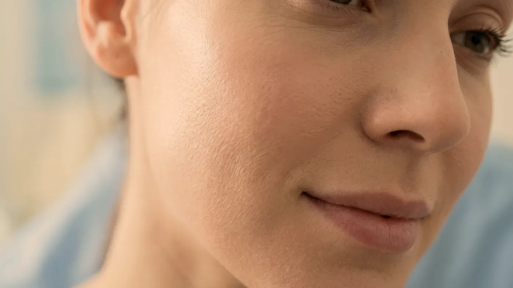
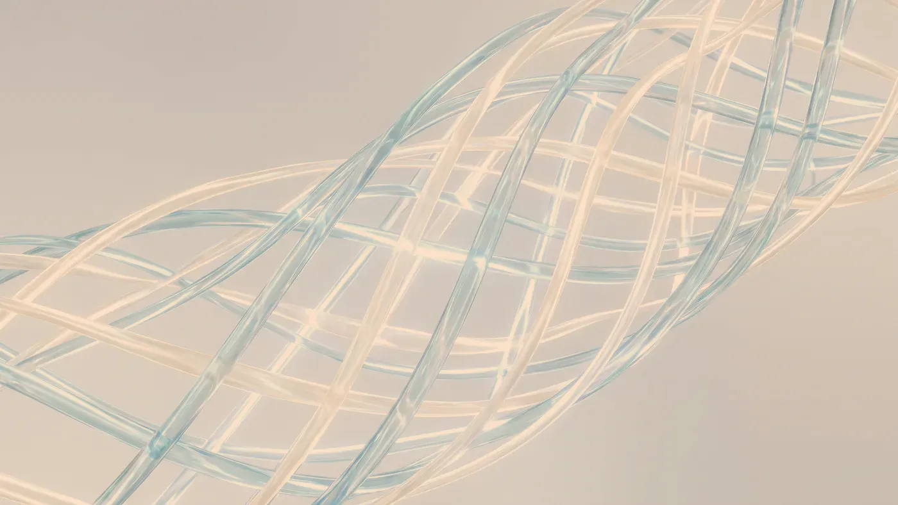

Şikâyet rehberi · Akne
Aktif akne başka, geride kalan iz başka
Akne sürerken hedef, yeni lezyonların çıkışını azaltmak ve iltihabı sakinleştirmektir. İz ise ancak bu dönem geride kaldıktan sonra, türü belirlenerek ele alınır. Bu yüzden ilk görüşmede cildinizin hangi dönemde olduğu saptanır ve plan bu sıraya göre kurulur.

Temsilî görsel · yapay zekâ ile üretildiAyrım
Cildinizde şu an hangi tablo ağır basıyor?
Akne planlamasında en sık görülen yanlış, dönem atlamaktır. İltihap sürerken yapılan bir işlem tabloyu alevlendirebilir; iz dönemine geçmiş bir ciltte aktif akneye yönelik plan sürdürmek ise beklenen değişimi getirmez. İkinci yanlış, bütün izleri tek bir başlıkta toplamaktır. Muayenede izler elle, yandan gelen ışıkla ve büyütmeli incelemeyle birbirinden ayrılır.
Aktif dönem
Deride açık ya da kapalı komedonlar, kızarık kabarcıklar, iltihaplı sivilceler veya derinde ağrılı sertlikler bulunur. Bu dönemde öncelik yeni lezyon çıkışını azaltmaktır. Deri yüzeyine yönelik işlemler çoğunlukla ertelenir; erken yapılan bazı girişimler iltihabı artırarak kalıcı iz olasılığını yükseltebilir.
Renk olarak kalan izler
Aynada iz gibi görünen şeylerin önemli bir kısmı, deride çukur ya da kabarıklık olmadan kalan renk farklılıklarıdır. Kırmızı-pembe izler iyileşme sırasında genişleyen küçük damarlardan kaynaklanır ve zamanla solma eğilimi taşır. Kahverengi izler ise iltihap sonrası koyulaşmadır; koyu tenlerde daha belirgin ve uzun sürelidir. Sivilceyi sıkmak, kabuğu koparmak ve güneşten korunmamak koyulaşmanın uzun sürmesine yol açar.
Çukur izler
İltihabın deri altında doku kaybına yol açmasıyla oluşur ve kendiliğinden düzelmez. Dar, derin ve keskin kenarlı olanlar; geniş, düz tabanlı ve belirgin kenarlı olanlar; yumuşak geçişli, dalgalı bir yüzey bırakanlar birbirinden farklı davranır. Her birinin karşılığı başka olduğu için yalnızca “izim var” demek planlama için yeterli değildir.
Kabarık izler
İyileşme sırasında gereğinden fazla doku yapıldığında gelişir; en sık sırt, omuzlar, göğsün ön yüzü ve çene hattında görülür. Bu bölgelerde işlem kararı daha dikkatli verilir, çünkü uygun olmayan bir zamanda yapılan müdahale izi daha belirgin hâle getirebilir.
Akneye benzeyen başka tablolar
Sivilceye benzeyen her döküntü akne değildir. İlaçlara bağlı döküntüler, çene ve alt yüze yerleşen hormonal tablolar, ağır kıvamlı ürünlerin yol açtığı tıkanmalar, yüzde kalıcı kızarıklıkla seyreden durumlar ve ileri yaşta başlayan akne muayenede ayrıca sorgulanır. Gerekli görülürse genel sağlık değerlendirmesi aynı görüşmede yapılır.
Plan beş adımda ilerler ve adımlar atlanmaz: önce tablo, sırt ve göğüs dâhil bütünüyle tanımlanır; ardından tetikleyiciler gözden geçirilir; aktif dönem sakinleştirilir; yüzeye yönelik işlemlerin zamanı belirlenir ve iz dönemi ayrı bir plan olarak ele alınır.
İz dönemindeki yöntemlerin çoğu, derinin kendi onarım sürecini harekete geçirerek sonuç almayı hedefler. Onarım haftalar, hatta aylar sürer ve aktif iltihap varken düzgün ilerlemez. Sırayı korumak hem gereksiz seanslardan hem de yeni iz oluşumundan kaçınmanın yoludur. Kontrol randevularının nasıl planlandığını uygulama sonrası takip sayfasında bulabilirsiniz.
Sonrası
Dönem belirlendikten sonra hangi seçenekler konuşulur?
Aşağıdaki başlıklar iz dönemine ve yüzey bakımına yöneliktir; aktif iltihap sürerken çoğu ertelenir. Size özel plan muayeneden sonra hekim tarafından kurulur ve sonuçlar kişiden kişiye değişir.
Fraksiyonel lazer
İZMuayenede belirlenir→Altın iğne radyofrekans
İZMuayenede belirlenir→Karbon peeling
YÜZEYMuayenede belirlenir→PRP
DESTEKMuayenede belirlenir→
Fraksiyonel lazer
Çukur izlerde, aktif iltihap geçtikten sonra kontrollü mikro alanlarla dokunun yenilenmesini uyarmayı hedefler.
Sayfasına git →Sık gelen sorular
Merak ettiğiniz soruya dokunun, yanıtı burada açılsın
Bir adım ötesi
Cildinizin hangi dönemde olduğunu birlikte belirleyelim
Dönem netleştikten sonra hangi adımın ne zaman atılacağı muayenede size özel olarak konuşulur.
Metni hazırlayan ve tıbbi açıdan gözden geçiren: Uzm. Dr. Rahmi Cebeci (Aile Hekimliği Uzmanı · Medikal Estetik Sertifikalı).
Buradaki anlatım herkese yöneliktir; size özel bir teşhis ya da tedavi planı sunmaz, muayenenin yerini tutmaz. Her uygulamanın etkisi kişiye göre farklı olur.